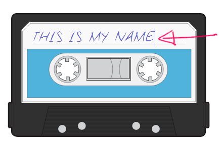
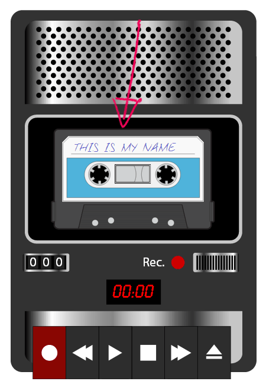
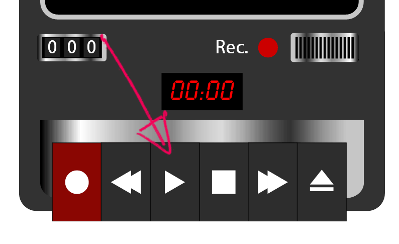
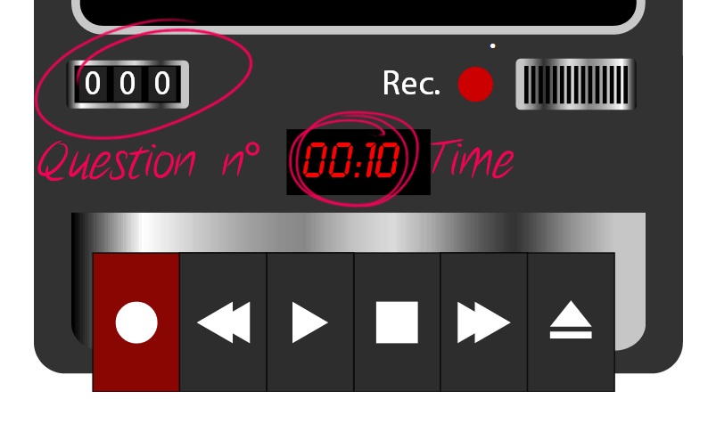
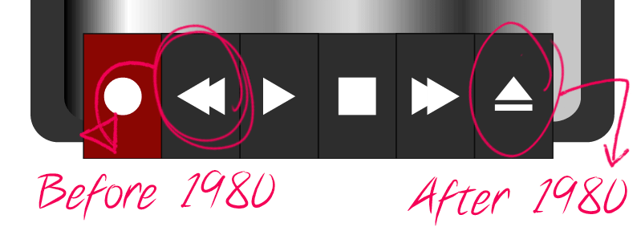

How to play
This is not your ordinary quiz. We do things differently here.
You will get only 2 options to answer. Either the answer is before 1980 or after 1980.
You might think this is easy, but you may be suprised how many times you guessed wrong.
Good Luck!
-
Write your name in the cassette tape
 -
Drag you personal tape in the recorder and press play
 -
Press the play button to begin the quiz
 -
There are 30 questions in total. Watch out for your time! The longer you play the less points you have.
 -
Click the rewind button if you think the answer is before '80, and the forward button if you think after '80.
